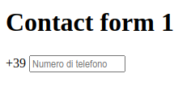
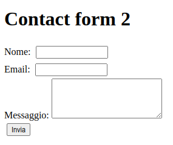
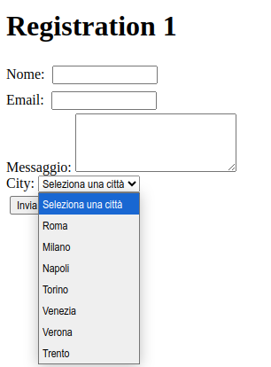
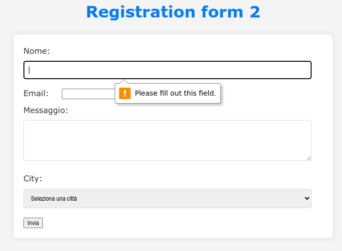
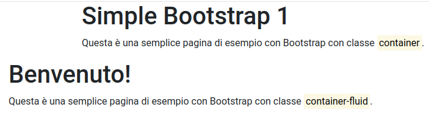
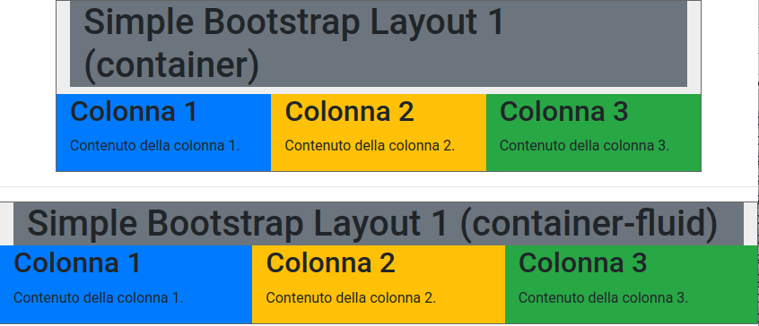
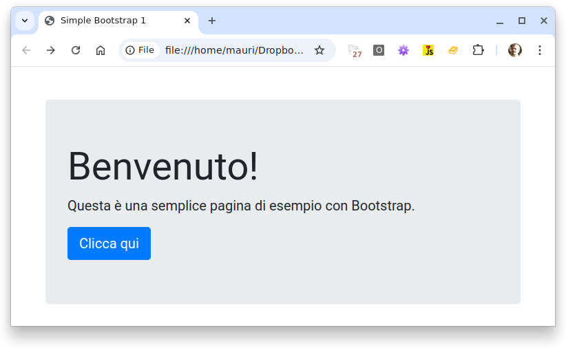
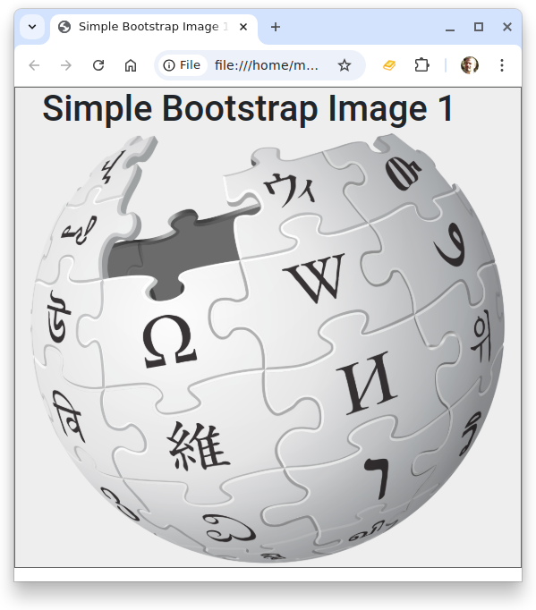
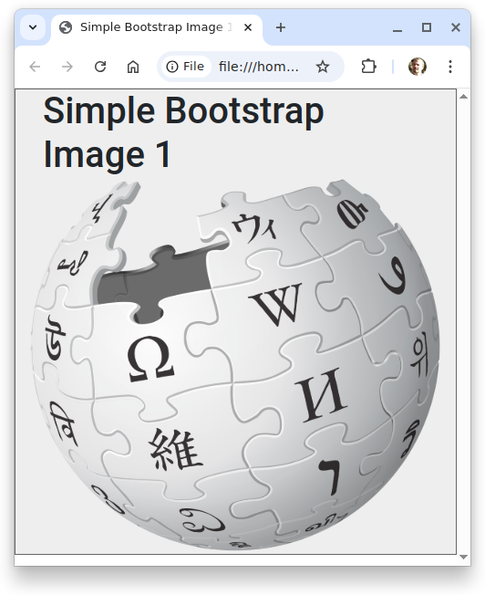

Appunti di laboratorio - elenco completo Contatto maurizio.boscaini@unitn.it
NOTA: questi appunti sono da intendersi solo come aiuto allo studio e alla preparazione all'esame.
La programmazione è difficile...ma è anche bella, utile e importante.
Si può imparare a programmare solo programmando.
Riferimenti
Un controllo o componente grafico è un elemento dell'interfaccia utente (UI) di un'applicazione che permette agli utenti di interagire con il software.
Esempi di controlli grafici comuni:
Le finestre secondarie possono essere di due tipi:
In pratica, i controlli grafici sono i mattoni fondamentali per creare interfacce interattive in applicazioni desktop, web o mobile di tipo GUI (+Graphical User Interface).
Elementi HTML da applicare (oltre a quelli già visti in esercizi precedenti):
<input>
<div class="input-box">
<span class="prefix">+39</span>
<input type="phone number" placeholder="Numero di telefono" />
</div>
Crea la pagina HTML come quella riportata di seguito con la seguente struttura e i seguenti file nel file system:
/contact_form1
├── contact_form1.html
├── /css
│ ├── styles.css

Elementi HTML da applicare (oltre a quelli già visti in esercizi precedenti):
<form> <label> <textarea> <button>
<form action="/contact" method="GET">
<label for="name">Nome:</label>
<input type="text" id="name" name="name" required />
<br />
<label for="email">Email:</label>
<input type="email" id="email" name="email" required />
<br />
<label for="message">Messaggio:</label>
<textarea id="message" name="message" rows="4" required></textarea>
<br />
<button type="submit">Invia</button>
</form>
Crea la pagina HTML come quella riportata di seguito con la seguente struttura e i seguenti file nel file system:
/contact_form2
├── contact_form2.html
├── /css
│ ├── styles.css

Elementi HTML da applicare (oltre a quelli già visti in esercizi precedenti):
<select>
<label for="city">City:</label>
<select id="city" name="city" required>
<option value="">Seleziona una città</option>
...
<option value="Trento">Trento</option>
</select>
Crea la pagina HTML come quella riportata di seguito con la seguente struttura e i seguenti file nel file system:
/registration_form1
├── registration_form1.html
├── /css
│ ├── styles.css

Modifica lo stile CSS della pagina HTML dell'esercizio 9.3 migliorandone estetica e accessiblità.
La struttura del file system è la seguente:
/registration_form2
├── registration_form2.html
├── /css
│ ├── styles.css

Il framework Bootstrap (https://getbootstrap.com) è un toolkit frontend popolare, estensibile e ricco di funzionalità, utilizzando componenti e sistemi di griglia predefiniti.
Inclusione del file di stile CSS di Bootstrap.
<link rel="stylesheet" href="https://stackpath.bootstrapcdn.com/bootstrap/4.5.2/css/bootstrap.min.css" />`
Eventuale inclusione dei file JavaScript di Boostrap per abilitare un comportamento lato front end.
<script src="https://code.jquery.com/jquery-3.5.1.slim.min.js"></script>
<script src="https://cdn.jsdelivr.net/npm/@popperjs/core@2.5.3/dist/umd/popper.min.js"></script>
<script src="https://stackpath.bootstrapcdn.com/bootstrap/4.5.2/js/bootstrap.min.js"></script>
class="container" class="container-fluid"
Struttura del file system:
/simple_bootstrap1
├── simple_bootstrap1.html

class="row" class="col"
Colori di background di Bootstrap https://getbootstrap.com/docs/5.0/utilities/background/
Struttura del file system:
/simple_bootstrap_layout1
├── simple_bootstrap_layout1.html

Obiettivo: Creare una pagina web con un titolo, un paragrafo e un pulsante, utilizzando le classi di Bootstrap per lo stile e il layout.
Passaggi:
Elementi Boostrap
: Crea un contenitore che centra il contenuto e aggiunge un margine superiore.
: Crea un jumbotron, un componente di Bootstrap per evidenziare il contenuto.
Struttura del file system:
/simple_bootstrap2
├── simple_bootstrap2.html
├── /css
│ ├── styles.css

Colori di background di Bootstrap https://getbootstrap.com/docs/5.0/utilities/background/
HTML5: Simple Bootstrap Image 1
Impostazione di un'immagine responsive che si ridimensiona con la pagina.
class="img-fluid"
Struttura del file system:
/simple_bootstrap_image1
├── simple_bootstrap_image1a.html
├── /css
│ ├── styles.css
├── /images
│ ├── Wikipedia-logo-v2.svg.png


HTML5: Simple Bootstrap Layout 1
Mette a confronto le classi container e container-fluid e crea elementi che si espandono su 4 colonne che si adattano in generale a tutti i dispositivi (md = medium)
class="col-md-4"
Struttura del file system:
/simple_bootstrap_layout1
├── simple_bootstrap_layout1.html